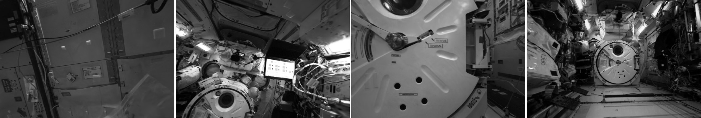

Idea
Keep a new monocular state in the same physical frame
After tracking loss, the digital twin supplies an absolute camera reference and metric depth. DART-SLAM uses them once to place and scale the new HI-SLAM2 state, then continues ordinary tracking.
01
ReferenceRetrieve a twin view with known pose and metric geometry.
02
AnchorEstimate and verify the live camera pose against the twin.
03
ContinueRescale the new SLAM state once and resume tracking.
Map quality
Comparable to a clean HI-SLAM2 reconstruction

26.356 / 24.398PSNR ↑ · DART-SLAM / clean reference
0.8448 / 0.8294SSIM ↑ · DART-SLAM / clean reference
0.1331 / 0.1709LPIPS ↓ · DART-SLAM / clean reference
148 own-pose training views. This checks reconstruction quality; it is not a held-out comparison or an outperform claim.

Final map
Two causal runs, one anchor gauge
PRE f0–f49 + POST f200–f938. Occluded frames f50–f199 are intentionally absent.